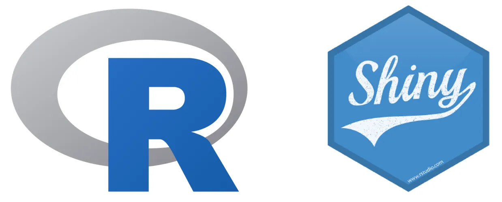

R Shiny App on GCP Cloud Run Demo
Changelog · Documentation · Docker Containers

[!NOTE] This is an R package built by No Clocks, LLC for demonstration purposes. It aims to showcase how to develop and deploy an R Shiny app as a package to Google Cloud Platform’s (GCP) Cloud Run service using Docker.
Overview
This repository contains an R package that demonstrates how to build and deploy an R Shiny app to Google Cloud Platform’s (GCP) Cloud Run service using Docker.
Installation
You can install the development version of rshinycloudrun from GitHub with your preferred installation method below:
[!WARNING] Notice that although the R package is named
rshinycloudrun, the GitHub repository is nameddemo-rshiny-cloudrun. This is for internal organization purposes and should not affect the installation process.
# Install using remotes
remotes::install_github("noclocks/demo-rshiny-cloudrun")
# Or using devtools
devtools::install_github("noclocks/demo-rshiny-cloudrun")
# Or using pak
pak::pkg_install("noclocks/demo-rshiny-cloudrun")Deployment
The package is set up to build and deploy the R Shiny app to Google Cloud Platform’s (GCP) Cloud Run service using Docker.
Code of Conduct
Please note that the rshinycloudrun package is released with a Contributor Code of Conduct. By contributing to this project, you agree to abide by its terms.
© 2024 No Clocks, LLC